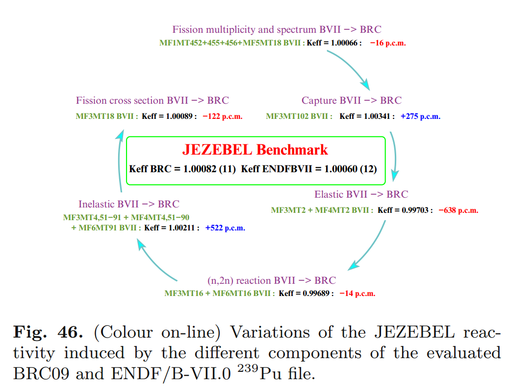

Data Science in Nuclear Engineering

Kathryn (Katy) Huff
Webinar, PyData Pune and PyData Mumbai
June 21, 2019


{kind=link}


“the first principle is that you must not fool yourself, and you are the easiest person to fool.” - R. Feynman, 1974
“I am thinking about something much more important than bombs. I am thinking about computers.” - John von Neumann, 1946.
[Monte Carlo calculations were the first program] “run on ENIAC in April 1948 by a team including John and Klara von Neumann and Nick Metropolis. This was not only the first computerized Monte Carlo simulation, but also the first code written in the modern paradigm, usually associated with the `stored program concept,` ever executed.”- Haigh et al. 2014
\[\phi(E,\vec{r},\hat{\Omega},T)\]
\[\phi(E, x, y, z, \theta, \omega, T)\]
\[\sigma(x, i, E, T)\]

\[\gamma(f, i)\]

\[i\]

\[E\]

nuclear structure
Evaluated Nuclear Data Sets

\[\sigma(x, i, E, T)=\] nuclear structure + experiments
Experiments
Experiments

Nuclear Data is for Simulations


Simulation Methods
- Monte Carlo Methods
- Deterministic Methods
- Hybrid Methods
- Other keywords...
- lattice codes
- ray tracing algorithms
- acceleration schemes
- adjoint methods
- ...
Application Specific Data Processing
- Energy discretization
- multigroup
- pointwise
- piecewise linear continuous
- Angular quadratures
- Resonance integration
- ...
How Do We Know It's Right?

The Data Dilemma
A Nuclear Fuel Cycle Simulation Framework
Agent Based Systems Analysis
Hundreds of discrete facilities mine, mill, convert, fabricate, transmute, recycle, and store nuclear material.

Agent Based Systems Analysis
A facility might create material.

Agent Based Systems Analysis
It might request material.

Agent Based Systems Analysis
It might do both.

Agent Based Systems Analysis
Even simple fuel cycles have many independent agents.

Data Science
In the decades since the invention of the Monte Carlo algorithm, machine learning has been incorporated in nuclear engineering in many ways.
Demonstrated Success
- Radioisotope
Identification
(Kamuda, Huff, Sullivan et al.) - Radioisotope
Localization
(Mattingly, Myeters, Smith et al.) - Mechanical Failure
Detection
(Chen, Jahanshahi, et al.) - Modeling
radioactive
material
dispersion
(University of Tokyo)
Active areas of research
- Optimized Reactor Fuel Arrangement
- Accelerated Monte Carlo
- Nuclear Fuel Cycle Safeguards
Radioisotope Identification
Urban source search and material interdiction.Unique Issues
Export control is serious.

Links
THE END
Katy Huff
katyhuff.github.io/2019-06-21-pune-webinar
Data in Nuclear Engineering by Kathryn Huff is licensed under a Creative Commons Attribution 4.0 International License.
Based on a work at http://katyhuff.github.io/2019-06-21-pune-webinar.
A Few of My Favorite Things
- C++, Python, Fortran
- xml, markdown, rst, $\LaTeX$
- Doxygen, sphinx
- CMake, conda, macports
- GoogleTest, nose
- hdf5, sqlite
- cython, boost, Coin
- jekyll, reveal.js, beamer
- yt, matplotlib, paraview

Transient Coupled Physics

The Journal of Open Source Software (JOSS) is a developer friendly journal for research software packages.
What exactly do you mean by 'journal'?
The Journal of Open Source Software (JOSS) is an academic journal (ISSN 2475-9066) with a formal peer review process that is designed to improve the quality of the software submitted. Upon acceptance into JOSS, a CrossRef DOI is minted and we list your paper on the JOSS website.
(More: JOSS Editorial Board. "About JOSS" joss.theoj.org/about. 2018.)
Don't we have enough journals already?
Perhaps, and in a perfect world we'd rather papers about software weren't necessary but we recognize that for most researchers, papers and not software are the currency of academic research and that citations are required for a good career.
(More: JOSS Editorial Board. "About JOSS" joss.theoj.org/about. 2018.)
You said developer friendly, what do you mean?
We have a simple submission workflow and extensive documentation to help you prepare your submission. If your software is already well documented then paper preparation should take no more than an hour.
(More: JOSS Editorial Board. "About JOSS" joss.theoj.org/about. 2018.)
 joss.theoj.org/about
joss.theoj.org/about

DOI: 10.7717/peerjcs.147/fig-1

Image DOI: 10.7717/peerjcs.147/fig-2
JOSS papers accepted by month, as of today.
Credit!
A lot of these thoughts came from my personal experience. However, much of it was annealed from conversations with colleagues throughout the scientific and computing communities (too many of you to name).
Resources
Ok, I'm convinced. So how can one learn this stuff?Online Resources
- Software Carpentry
- Data Carpentry
- The Hacker Within
- Version Control: Github, Pro Git book
- Testing: nose, goolgetest
- Documentation: Sphinx, Doxygen
Papers!
- Wilson, Greg, D. A. Aruliah, C. Titus Brown, Neil P. Chue Hong, Matt Davis, Richard T. Guy, Steven H. D. Haddock, Kathryn D. Huff, et al. 2014. “Best Practices for Scientific Computing.” PLoS Biol 12 (1): e1001745. doi:10.1371/journal.pbio.1001745.
- Wilson, Greg, Jennifer Bryan, Karen Cranston, Justin Kitzes, Lex Nederbragt, and Tracy K. Teal. 2016. “Good Enough Practices in Scientific Computing.” arXiv:1609.00037 [Cs], August. http://arxiv.org/abs/1609.00037.
- Scopatz, Anthony, and Kathryn D. Huff. 2015. Effective Computation in Physics. 1st edition. S.l.: O’Reilly Media.
- Blanton, Brian, and Chris Lenhardt. 2014. “A Scientist’s Perspective on Sustainable Scientific Software.” Journal of Open Research Software, Issues in Research Software, 2 (1): e17.
- Donoho, David L., Arian Maleki, Inam Ur Rahman, Morteza Shahram, and Victoria Stodden. 2009. “Reproducible Research in Computational Harmonic Analysis.” Computing in Science & Engineering 11 (1): 8–18. doi:10.1109/MCSE.2009.15.
- Goble, Carole. 2014. “Better Software, Better Research.” IEEE Internet Computing 18 (5): 4–8. doi:10.1109/MIC.2014.88.
- Hannay, J. E, C. MacLeod, J. Singer, H. P Langtangen, D. Pfahl, and G. Wilson. 2009. “How Do Scientists Develop and Use Scientific Software?” In Proceedings of the 2009 ICSE Workshop on Software Engineering for Computational Science and Engineering, 1–8.
- Joppa, L. N., G. McInerny, R. Harper, L. Salido, K. Takeda, K. O’Hara, D. Gavaghan, and S. Emmott. 2013. “Troubling Trends in Scientific Software Use.” Science 340 (6134): 814–15. doi:10.1126/science.1231535.
- Merali, Zeeya. 2010. “Computational Science: ...Error.” Nature 467 (7317): 775–77. doi:10.1038/467775a.
- Petre, Marian, and Greg Wilson. 2014. “Code Review For and By Scientists.” arXiv:1407.5648 [cs], July.
- Schossau, Jory, and Greg Wilson. 2014. “Which Sustainable Software Practices Do Scientists Find Most Useful?” arXiv:1407.6220 [cs], July.
- Stodden, Victoria. 2010. “The Scientific Method in Practice: Reproducibility in the Computational Sciences.” SSRN Electronic Journal. doi:10.2139/ssrn.1550193.
- Wicherts, Jelte M., Marjan Bakker, and Dylan Molenaar. 2011. “Willingness to Share Research Data Is Related to the Strength of the Evidence and the Quality of Reporting of Statistical Results.” PLoS ONE 6 (11): e26828. doi:10.1371/journal.pone.0026828.
Good Books, etc.
- Clean Code - Robert C. Martin
- Working Effectively with Legacy Code - Martin Fowler
- Effective Computation in Physics - Huff, Scopatz
THE END
Katy Huff
katyhuff.github.io/2018-12-22-mumbaiBest Practices and Resources for Scientific Computing by Kathryn Huff is licensed under a Creative Commons Attribution 4.0 International License.
Based on a work at http://katyhuff.github.io/2018-12-22-mumbai.